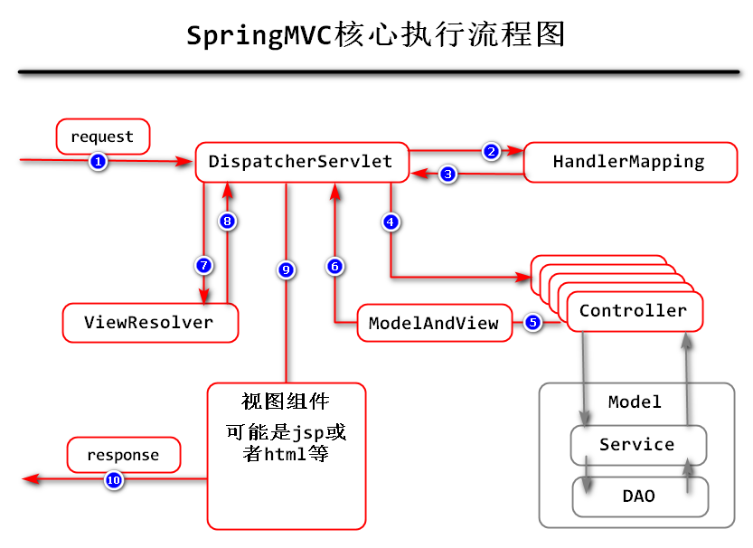

SpringMVC主要解决了View-Controller交互的问题。
传统的Controller具体表现为一个个的Servlet类，在一个普通的项目中，需要实现的功能至少有50个以上，假设是50个，则项目中就需要创建50个Servlet类去处理这50个功能对应的请求，在web.xml中每个Servlet类至少需要8行代码进行配置，则共计需要400行代码进行配置（当然，JavaEE允许通过注解的方式进行配置），如果是一个更加复杂的系统，就会导致：Servlet实例过多，类文件太多，配置文件太长，所导致的代码开发难度和维护难度大的问题。另外，还存在Servlet或其它Java EE中的API功能较弱的问题。
DispatcherServlet：前端控制器，用于接收所有请求，并进行分发；
HandlerMapping：记录了请求路径与实际处理请求的控制器之间的对应关系；
Controller：实际处理请求的控制器；
ModelAndView：控制器的处理结果，其中Model表示处理请求时得到的即将响应给客户端数据，View表示负责响应时显示的视图的名称；
ViewResolver：根据视图的名称，确定视图组件。

在浏览器中，通过http://localhost:8080/项目名称/hello.do进行访问，页面中将显示“Hello, SpringMVC!!!”字样。
创建Maven Project，勾选Create a simple project，Group Id为cn.tedu.spring，Artifact Id为SPRINGMVC-01，Packaging必须选择war。
创建完成后，先生成web.xml；从前序项目中复制spring-webmvc依赖；复制Spring的配置文件到新项目中，删除原有配置；添加Tomcat运行环境。
SpringMVC中已经定义好了DispatcherSerlvet类，如果需要该Servlet能够接收并处理请求，首先，就需要在web.xml中进行配置：
<servlet>
<servlet-name>SpringMVC</servlet-name>
<servlet-class>org.springframework.web.servlet.DispatcherServlet</servlet-class>
</servlet>
<servlet-mapping>
<servlet-name>SpringMVC</servlet-name>
<url-pattern>*.do</url-pattern>
</servlet-mapping>
在配置时，如果不明确
DispatcherServlet的包名，可以随意创建某个Java类，在类中声明该Servlet，由Eclipse完成导包，则import语句中就有了该类的全名。
至此，DispatcherServlet就可以接收所有以.do为后缀的请求。
默认情况下，所有的Servlet都是第一次接收并处理请求时才完成的初始化操作，并且，SpringMVC框架是基于Spring框架基础之上的，在项目启动初期，就应该加载整个Spring环境，以保证SpringMVC框架能正常运行！所以，可以通过配置去实现：当启动Tomcat时，就直接初始化DispatcherServlet，在DispatcherServlet中，已经定义了某个属性，值是Spring配置文件的位置，当DispatcherServlet被初始化时，就会读取该配置文件！
在配置时，可以通过<load-on-startup>使得DispatcherServlet是默认直接初始化的！
在DispatcherServlet的父类FrameworkServlet中，有contextConfigLocation属性，其作用就是制定Spring配置文件的位置，一旦创建了DispatcherServlet对象，就会自动读取所配置的文件，以加载Spring的环境！则配置为：
<init-param>
<param-name>contextConfigLocation</param-name>
<param-value>classpath:spring.xml</param-value>
</init-param>
至此，关于DispatcherServlet的完整配置：
<servlet>
<servlet-name>SpringMVC</servlet-name>
<servlet-class>org.springframework.web.servlet.DispatcherServlet</servlet-class>
<init-param>
<param-name>contextConfigLocation</param-name>
<param-value>classpath:spring.xml</param-value>
</init-param>
<load-on-startup>1</load-on-startup>
</servlet>
<servlet-mapping>
<servlet-name>SpringMVC</servlet-name>
<url-pattern>*.do</url-pattern>
</servlet-mapping>
以上配置实现的效果就是：当Tomcat启动时，就会创建DispatcherServlet的对象，并且，DispatcherServlet会读取所配置的spring.xml文件，以加载Spring环境，后续，DispatcherServlet将接收所有以.do为后缀的请求！
如果需要验证现在的配置结果，可以自定义cn.tedu.spring.User类，然后，在类中显式的定义构造方法：
public class User {
public User() {
System.out.println("创建了User的对象！");
}
}
然后在Spring的配置文件中进行配置：
<bean class="cn.tedu.spring.User" />
由于Tomcat启动时就会初始化DispatcherServlet，进而加载Spring配置文件，就会由Spring框架创建User对象，导致构造方法被执行，所以，当启动Tomcat时，就会看到构造方法中输出的内容！
首先创建cn.tedu.spring.HelloController控制器类，在类之前添加@Controller注解：
package cn.tedu.spring;
import org.springframework.stereotype.Controller;
@Controller
public class HelloController {
}
然后，需要在Spring的配置文件设置组件扫描：
<!-- 组件扫描 -->
<context:component-scan base-package="cn.tedu.spring" />
然后，在控制类中添加处理请求的方法，方法的设计原则是：
应该使用public权限；
暂时使用String作为返回值类型；
方法名称自由定义；
方法中暂时不添加参数。
所以，可以将方法设计为：
public String showHello() {
return null;
}
然后，在方法之前添加@RequestMapping注解，用于配置请求路径，以确定请求路径与处理请求的方法的对应关系：
@RequestMapping("hello.do")
public String showHello() {
return null;
}
所以，可以在方法中加入一段测试代码：
@RequestMapping("hello.do")
public String showHello() {
System.out.println("HelloController.showHello()");
return null;
}
然后，打开浏览器，输入http://localhost:8080/SPRINGMVC-01/hello.do，在浏览器中会提示404错误，因为目前尚未处理页面，在Eclipse的控制台应该可以看到以上输出的内容！每访问一次，就会出现1次输出语句！
处理请求的方法的参数是String类型时，默认表示响应给客户端的视图的名称，后续，会经过ViewResolver进行处理，得到具体的视图。
首先，应该创建jsp页面，例如在WEB-INF下创建index.jsp文件，页面内容随意，例如显示“Hello, SpringMVC!!!”字样。
然后，需要设计处理请求的方法的返回值，并配置ViewResolver！ViewResolver是一个接口，具体使用的实现类是InternalResourceViewResolver，需要在Spring的配置文件中配置它的prefix和suffix属性，分别表示“前缀”和“后缀”，InternalResourceViewResolver的工作模式是以webapp文件夹为根路径，将“前缀 + 处理请求的方法的返回值 + 后缀”得到具体的JSP文件的位置，刚才创建的JSP文件在webapp/WEB-INF/index.jsp，则可以：
/WEB-INF/ + index + .jsp
"" + /WEB-INF/index.jsp + ""
还可以是其他组合方式，只要能组合出文件的路径都是正确的，可以在处理请求的方法中返回"index"，然后配置为：
<!-- 视图解析器 -->
<bean class="org.springframework.web.servlet.view.InternalResourceViewResolver">
<property name="prefix" value="/WEB-INF/" />
<property name="suffix" value=".jsp" />
</bean>
至此，开发完成，可以再次测试访问。
开发新项目SPRINGMVC-02，要求实现的目标：
通过http://localhost:8080/SPRINGMVC-02/reg.do能打开注册页面，该页面中至少包含用户名、密码、年龄、手机号码、电子邮箱的5个输入框，及1个提交按钮；
通过http://localhost:8080/SPRINGMVC-02/login.do能打开登录页面，该页面中至少包含用户名、密码2个输入框，及1个提交按钮；
以上2个请求的处理对应2个方法，这2个方法可以在同一个控制器类中。
首先，如果启动时，弹出对话框，对话框中提示了端口号，多是因为端口号冲突，例如此前已经启动了Tomcat却没有关闭，仍再次启动，就会出现冲突。如果要解决问题，可以先停止此前占用端口的程序，例如在Eclipse找到停止按钮，或者在Tomcat的bin目录下执行shutdown指令，如果不知道如何，可以重启电脑！
如果启动过程中报告异常信息，提示ClassNotFoundException或者FileNotFoundException，就检查对应的类是否存在，如果提示的类是依赖的jar包中的类，可能是jar包文件已经损坏，需要重新下载(可以删除.m2中的jar包或者更换版本)。
如果启动过程中报告的异常信息是ZipException，一定是某个jar包损坏，则检查最近添加的依赖的jar包并重新下载。
如果启动过程中报告的异常信息是LifeCycleException，通常是由于缓存问题导致的，则需要Clean项目及Tomcat。
如果把项目和Tomcat都Clean了仍错误，可以在Servers面板中删除现有的Tomcat，同时删除名为Servers的项目，然后重新添加Tomcat。
如果问题依然存在，则继续删除Tomcat，添加时，添加其他Tomcat。
参考：http://doc.tedu.cn/schema.html